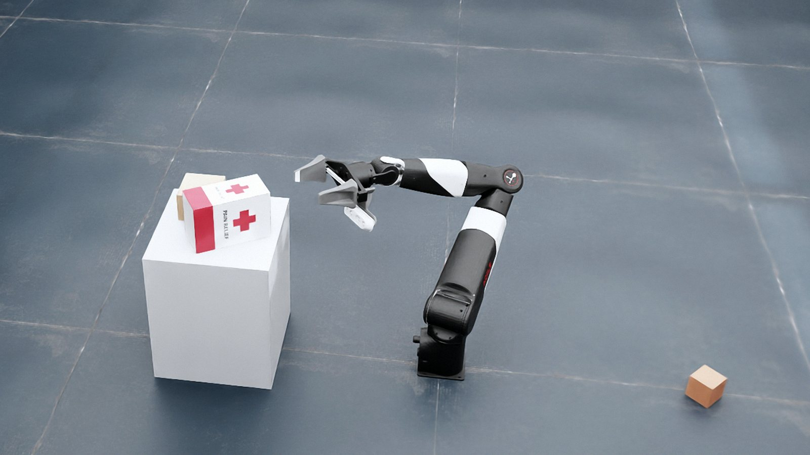
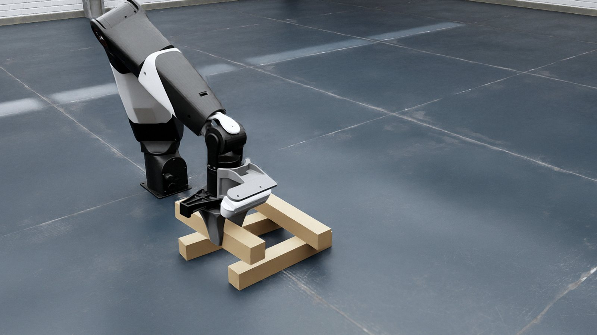
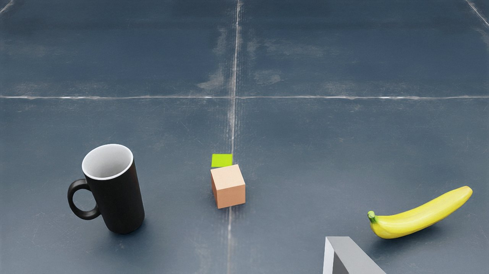

Isaac Sim · 7-DoF Manipulator
LLM 판단 기반
로봇 Pick-and-Place
자연어 명령을 받아 물체를 탐색·파지하고, LLM이 생성한 배치 자세 제약(놓을 면과 방향)을 만족하는 pick-and-place 궤적을 계획한다.
제약을 만족하는 해가 없으면 실패 원인을 LLM에 피드백해 제약을 완화하거나 작업을 중단한다.

과제
의미 기반 배치 · 정밀 배치다물체 분류
평가
87 케이스. 성공률 96%(장애물 없음), 58%(장애물 있음)구성
Isaac Sim · ROS 2 HumbleJetson AGX Thor
만든 사람
오세준서강대학교 대학원 BPDL
Tasks
수행 과제

장애물로 top-up 배치가 불가해 제약을 1회 완화한 결과
井자 조립 중 · 위치 오차 3.5–22mm
초기 장면영상은 녹화 후 교체 예정.
Results
평가 결과
의미 기반 배치 과제. 16개 장면, 87 케이스, 케이스당 1회 실행.
96%
장애물 없음
24 / 25 케이스 pick-and-place 성공
58%
장애물 있음
18 / 31 케이스 성공. 실패 13건은 모두 계획 성공 이후 실행 단계(파지·이송·배치)에서 발생.
87케이스
평가 규모
물체, 장애물 유무, 배치 제약을 달리한 16개 장면